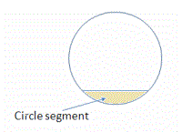
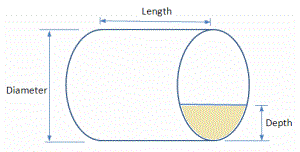

If we take a horizontal cylinder, and cut it into two pieces using a cut parallel to the sides of the cylinder, we get two horizontal cylinder segments. In the figure above, the bottom one is shown colored blue. The other one is the transparent part on top.

If we look a the end of the cylinder, we see it is a circle cut into two circle segments. See Circle segment definition for more.Whenever we have a solid whose cross-section is the same along its length, we can always find its volume by multiplying the area of the end by its length. So in this case, the volume of the cylinder segment is the area of the circle segment, times the length.
So as a formula the volume of a horizontal cylindrical segment is
Where
s = the area of the circle segment forming the end of the solid, and
l = the length of the cylinder.
The area of the circle segment can be found using it's height and the radius of the circle.
See Area of a circle segment given height and radius.
Use the calculator below to calculate the volume of a horizontal cylinder segment. It has been set up for the practical case where you are trying to find the volume of liquid is a cylindrical tank by measuring the depth of the liquid.
For convenience, it converts the volume into liquid measures like gallons and liters if you select the desired units. If you do not specify units the volume will be in whatever units you used to input the dimensions. For example, if you used feet, then the volume will be in cubic feet. Use the same units for all three inputs.

| Units | ||
| Cylinder diameter | ||
| Cylinder length | ||
| Depth | ||
| Volume | ||